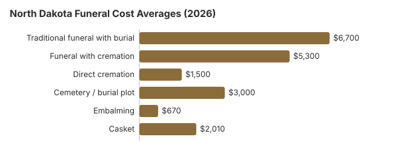

Funeral Costs in North Dakota: What Families Pay in 2026
A traditional funeral in North Dakota averages about $6,700 on our 2026 estimate, 19% under the $8,300 national median. Just over half of families (55%) choose cremation, which starts near $1,500 when it is direct. This page sets out the North Dakota line items, the add-ons worth questioning, the help available through the state's human service zones, and what death certificates cost.
Funeral Cost Breakdown in North Dakota
Each line is our North Dakota estimate. Prices still differ from home to home, and the State Board of Funeral Service licenses funeral homes without setting what they charge.
| Item | North Dakota average | Range seen |
|---|---|---|
| Traditional funeral with burial | $6,700 | $5,025 – $8,710 |
| Funeral with cremation | $5,300 | $4,240 – $6,890 |
| Direct cremation | $1,500 | $1,050 – $2,100 |
| Cemetery / burial plot | $3,000 | $1,500 – $6,000 |
| Embalming | $670 | $500 – $1,500 |
| Casket | $2,010 | $670 – $5,360 |
About the North Dakota numbers: they are our own statewide estimates, not prices collected from North Dakota funeral homes, and not a quote or professional advice. Read our method for how they are built, and the disclaimer.
State sources: N.D.C.C. § 23-06-03(6).

What Shapes a North Dakota Funeral Bill
North Dakota funeral prices are usually below the US median of $8,300, and city and rural quotes can differ by 10-30%. Every funeral home is overseen by a small board: the state health officer or a designee plus three governor-appointed embalmers, each with at least three years of practice in North Dakota. Each place of business needs its own establishment license, a crematorium needs an annual license costing no more than $100, and the board writes the rules for what happens to cremated remains a funeral home is left holding when no one claims them (N.D.C.C. ch. 43-10).
North Dakota's 55% cremation rate is 8.4 points under the 63.4% that NFDA projected nationally for 2025, so burial is still chosen by a large share of families here.
Add-Ons to Question in North Dakota
Most unexpected charges on a North Dakota bill are add-ons you can question:
- Embalming described as mandatory. North Dakota law rarely requires it, so ask the home which rule it means.
North Dakota Cremation and Burial Pages
North Dakota's cremation and burial pages go into more detail:
Cremation Costs in North Dakota
Direct cremation from $1,500 and cremation with a service from $5,300, plus urns, scattering rules and memorial ideas for the 55% of North Dakota families who choose cremation.
Burial Costs in North Dakota
Plots from $3,000; add a casket, a vault, a marker and the grave opening and closing, and a full North Dakota burial comes to $14,910 to $19,410.
Your Federal Rights in North Dakota
Family-Owned Homes in North Dakota
Family-owned funeral homes make up much of North Dakota's market and often price near the NFDA national averages, while homes owned by national groups can differ, so ask whether a home is independent. The State Board of Funeral Service (701-776-6222) licenses both kinds but publishes no prices. Get each home's General Price List, which the FTC Funeral Rule requires, and compare the basic services fee first.
Lower-Cost Choices in North Dakota (2026)
| Choice | Approximate cost | Includes |
|---|---|---|
| Direct cremation | $1,500 | No viewing or service; a permit comes first, but North Dakota sets no fixed wait (N.D.C.C. § 23-06-07). |
| Direct burial | $3,350 | Prompt burial without embalming or a viewing; the cemetery bills the grave and its opening on top. |
| Green burial | $3,685 | A shroud or biodegradable casket and no embalming; only some North Dakota cemeteries allow it. |
| Cremation + memorial | $5,300 | Cremation first, a memorial service later |
| Traditional funeral | $6,700 | Viewing, funeral and burial |
Help Paying for a North Dakota Funeral
- When there is no money and no responsible relative, the human service zone pays $3,500 for the final disposition, which will be a cremation unless burial is asked for on religious grounds (N.D.C.C. § 23-06-03).
- The funeral home normally tells Social Security about the death, but the spouse or child must still claim the $255 lump sum, within two years (1-800-772-1213).
- Whoever paid for a North Dakota veteran's funeral can claim the VA allowance on Form 21P-530EZ. When a death on or after October 1, 2026 was not service-connected, VA pays up to $1,032 toward burial and the same again toward a plot. Who qualifies is explained in our veteran burial benefits guide.
- Medicaid, charity and other sources of help are covered in our funeral payment assistance guide and in how to pay for a funeral with no money.
Educational Resources
- Funeral Consumers AllianceIndependent nonprofit consumer advocacy for funeral rights
- FTC Funeral RuleThe federal rule protecting funeral consumers
- Funeral Insurance GuideCompare final expense and burial insurance options
- Best Burial Insurance CompaniesSide-by-side comparison of top burial insurance providers
- Payment Assistance GuideGovernment programs and financial help for funeral costs
- Insurance Plan ComparisonCompare coverage, premiums, and payout speed across providers
Compare Funeral Costs
- Average Funeral Cost in 2026National cost breakdown with real prices
- Cremation vs. Burial Cost ComparisonSide-by-side price comparison to help you decide
- Funeral Cost BreakdownEvery line item explained: know what you're paying for
- Cheapest Funeral OptionsLower-cost alternatives, with typical price ranges
- Direct Cremation: Most Affordable OptionNFDA 2023 median $2,645 with a family-supplied container (latest available)
- How to Compare Funeral PricesStep-by-step guide to getting the best price
Cremation or Burial in North Dakota
Cremation
- Direct cremation starts near $1,500
- With a funeral service, from $5,300
- No plot to buy
- The memorial can be held when it suits the family
- Chosen by 55% of North Dakota families
Traditional Burial
- Funeral service from $6,700
- Plot from $3,000
- Most cemeteries ask for a vault or liner
- A permanent grave to visit
- Metal casket: about $2,500 national median (NFDA 2023 General Price List Study); North Dakota prices vary by seller
Prices in North Dakota Cities
Prices differ between North Dakota's cities. Our estimates for each:
Arranging a North Dakota Funeral, Step by Step
If you are arranging a North Dakota funeral now, taking these steps in order avoids the costliest mistakes:
- Choose cremation or burial first: cremation in North Dakota or burial in North Dakota.
North Dakota death certificates: $15 and $10
North Dakota Vital Records charges $15 for the first certified copy of a death record and $10 for each additional copy ordered at the same time; it does not issue uncertified copies (ND Health and Human Services, death records; checked October 29, 2026). Four copies cost $45.
- Three versions: the complete record with cause of death and Social Security number goes to relatives, an authorized representative or the funeral director; a "facts of death" copy omits the cause; an informational copy for anyone omits both.
- Speed: mailed copies usually go out in 3 to 5 business days, and an online order marked "Web Order Pickup" is often ready in under two hours at the Bismarck office (701-328-2360).
North Dakota's eight-day rule and who decides
North Dakota gives families a firm deadline: the body must reach final disposition within eight days of the death (N.D.C.C. § 23-06-04). There are exceptions, including a body being taken out of state for burial and a permit for more time from the local health officer or the Department of Health and Human Services. A body may also be held in a suitable storage vault, but from June through October not for more than eight days without a permit. Missing the deadline is a class B misdemeanor (§ 23-06-05).
No burial or cremation can go ahead until a subregistrar issues a final disposition-transit permit, and the subregistrar will not issue one until the death record is complete and correct (§ 23-06-07). The funeral practitioner, or the person acting as one, collects the permit and gives it to the cemetery sexton or whoever is in charge of the disposition before it takes place (§ 23-06-09). (Source: N.D.C.C. ch. 23-06; checked October 30, 2026.)
- Who has the duty: first an adult the person named in a signed statement, then the surviving spouse, then a majority of the adult children, then the parents, then a majority of the adult siblings (§ 23-06-03).
- What it means for cost: eight days leaves little time to shop around, so ask two or three funeral homes for prices on the first day.
North Dakota's funeral board, human service zones and veterans cemeteries
The North Dakota State Board of Funeral Service (701-776-6222) licenses the state's funeral homes and handles complaints about pricing, misleading sales and homes that will not hand over a price list.
The Funeral Consumers Alliance does not include North Dakota among the nine states that require a funeral director for parts of after-death care, so a family can handle much of a funeral itself. Whoever does it must still file the death certificate and the disposition permit.
If you are weighing cremation, North Dakota sets no fixed waiting period, though a permit comes first (N.D.C.C. § 23-06-07).
When there is no money to pay
If a death leaves too little to pay and there is no responsible relative, the human service zone has seven days from the application to arrange the final disposition, and it pays $3,500 (N.D.C.C. § 23-06-03). That will be a cremation unless burial is requested for religious reasons. (Source: N.D.C.C. § 23-06-03(6).) Social Security's $255 lump sum is paid only to an eligible spouse or child who claims it within two years, never to the funeral home.
Veterans cemeteries
To reserve a grave at Fargo National Cemetery (701-451-4650), the funeral home contacts the VA's National Cemetery Scheduling Office (800-535-1117). All Nations Veterans Cemetery - Fort Yates (tribal, 701-854-8689) and North Dakota Veterans Cemetery (701-667-1418) take requests directly.
North Dakota steps
- Ask North Dakota funeral homes for itemized prices by phone or in person; under the FTC Funeral Rule you pay only for what you choose.
- Ask whether your plans really need embalming.
- Apply to the human service zone early; it has seven days to act once you apply.
- For a veteran, have the funeral home check Fargo National Cemetery before buying a private plot.
- Report a home that hides or ignores its price list to the board at 701-776-6222.
Frequently Asked Questions
How much is a North Dakota funeral in 2026?
Plan on about $6,700 for a full traditional funeral in North Dakota, 19% below the $8,300 national figure. Cremation with a ceremony is nearer $5,300, and direct cremation can be about $1,500. A cemetery plot adds roughly $3,000. Prices vary from one home to the next, so compare before you commit.
How much does cremation save over burial in North Dakota?
By a wide margin. Direct cremation starts at about $1,500. A traditional funeral with burial is about $6,700 even before the plot or vault are paid for, so most North Dakota families would spend at least $5,200 more on burial.
What rights do I have with a North Dakota funeral home?
The FTC Funeral Rule gives you the right to an itemized price list, to prices by phone, and to buy only what you choose. North Dakota is not among the nine states the Funeral Consumers Alliance lists as requiring a funeral director, and the State Board of Funeral Service (701-776-6222) takes complaints.
How can a North Dakota family cut funeral costs?
Compare prices first: line up two or three General Price Lists from North Dakota homes and check them item by item. Ask the clerk in the county where the burial will be about township and county cemeteries, which rarely show up online and can cost less than private ones. Direct cremation, at about $1,500, is the cheapest option in the state.
Is embalming required in North Dakota?
Usually not. Under the FTC Funeral Rule a North Dakota home cannot claim embalming is legally required when it is not, and its price list has to state that embalming is needed only in special cases. A provider that insists should be able to name the law or cemetery rule; the State Board of Funeral Service, 701-776-6222, licenses homes and takes complaints.
Are North Dakota funerals cheaper than elsewhere?
Cheaper than many. Our $6,700 average for a traditional North Dakota funeral is 19% under the $8,300 national median, in line with moderate living costs across the Midwest.
What is the cheapest arrangement in North Dakota?
Direct cremation, at about $1,500, which covers transport, the cremation and the return of the ashes. If the family wants burial, direct burial with no viewing or service is about $3,350 in North Dakota before cemetery fees, the cheapest burial choice.
How do I find a fairly priced North Dakota funeral home?
Phone several North Dakota homes and ask for their prices; the FTC Funeral Rule obliges them to answer. You may also buy the casket or urn somewhere else, and the home cannot add a fee for using it.